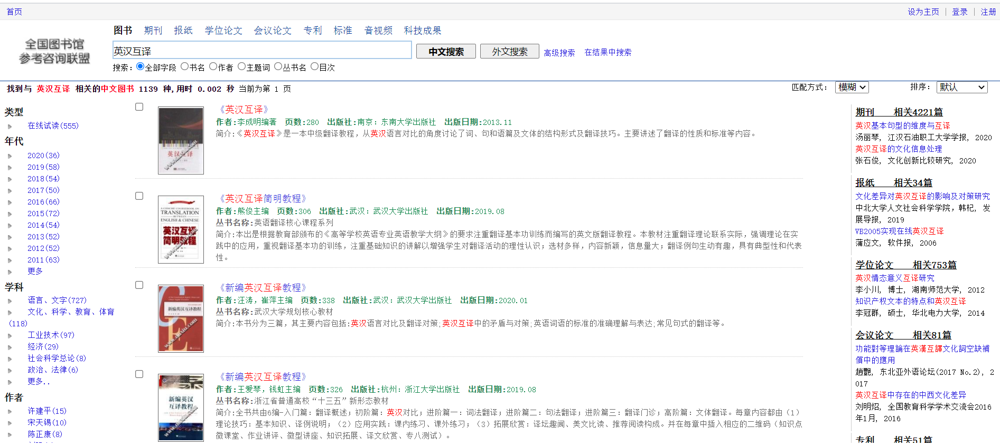
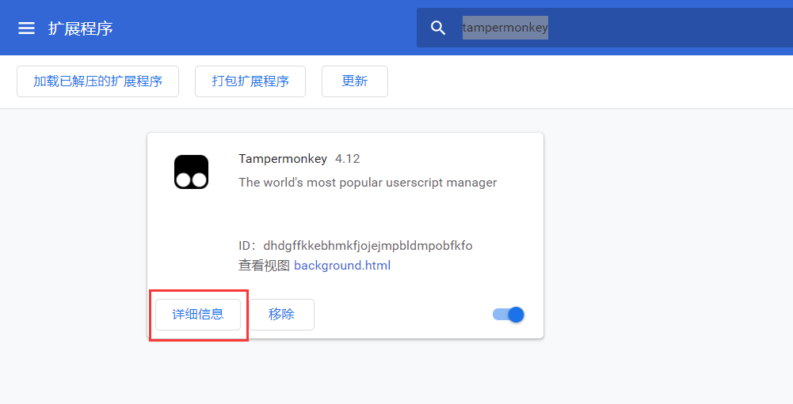
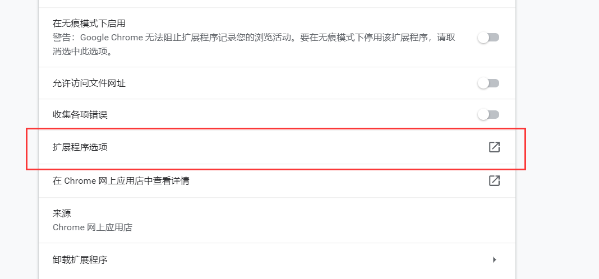

全国图书馆参考咨询联盟是在全国文化信息资源共享工程国家中心指导下，由中国公共、教育、科技系统 图书馆合作建立的公益性服务机构，其宗旨是以数字图书馆馆藏资源为基础，以因特网的丰富信息资源和各种信息搜寻技术为依托，为社会提供免费的网上参考咨询和文献远程传递服务.
该网站拥有中国大规模的中文数字化资源库群：电子图书120万种，期刊论文4000多万篇，博硕士论文300万篇，会议论文30万篇，外文期刊论文500万篇，国家标准和行业标准7万件，专利说明书86万件，以及全国公共图书馆建立的规模庞大的地方文献数据库和特色资源库，提供网络表单咨询、文献咨询、电话咨询和实时在线咨询等多种方式的服务。（摘自百度百科）
最开始的时候该网站还可以同时提供书籍和论文的文献传递服务，按步骤注册即可使用，但是前段时间不知为何突然所有的书籍都不提供文献传递服务了，只有论文可以，关于论文的问题后面还会介绍，我们先来看一下如何下载书籍的全本PDF吧。
拓展程序tampermonkey+“红太狼的平底锅”脚本
推荐使用Chrome浏览器，需要先在tampermonkey的网站下载该拓展程序，添加到Chrome浏览器的拓展程序中。
“红太狼的平底锅”脚本链接：https://pan.baidu.com/s/1eOw4S__dPEki-H2CplPW5g 提取码：0987
点击浏览器右上角的三个小点，找到“更多工具”里的“拓展程序”，点进去后找到tampermonkey；
点击“详细信息”；
点击拓展程序选项，跳转到添加脚本的页面；
点击“+”，进入新脚本编辑页面。
全选已有预设内容，然后复制“红太狼的平底锅”脚本，粘贴到编辑框中，最后点击“文件”-“保存”，这样就可以回到全国图书馆咨询联盟的网站找书啦~
搜索之后我们会发现，每本书下面都多了一个“存货查询”,点击之后系统会提醒该书是否有可供下载的电子版。
一般有货的书3元左右，亲测是比淘宝找书便宜那么一点的 [捂脸.jpg]~
这个方法用来江湖救急还是不错的!
如果使用的是360浏览器，则可直接在右上角的“拓展管理”中搜索tampermonkey，然后再把“红太狼的平底锅”脚本添加进去就可以了，操作非常简便。
一般来说，大家会从学校图书馆的知网入口下载中文文献，学校也会都会购入主要的期刊，但有时会遇到系统提示“贵单位未购买该资源”或者是出现一个小锁的图标，也就是说学校没有买这本期刊的论文。
这个时候就可以来找全国图书馆参考咨询联盟啦！
以这篇文章《“深度翻译”也有“度”》为例，北外图书馆并没有购入，这时我们可以登录全国图书馆参考咨询联盟（记得提前注册哈），点击“邮箱接收全文”，再填写自己的邮箱，然后就等着论文发送到你的邮箱了~
刚才我们推荐的方法下载的文件一般都是PDF版本的，如果想在kindle或者其他格式的阅读器上阅读的话应该怎么办呢？
这里给大家推荐一个非常快捷的转换网站：https://cloudconvert.com/
网站支持多种格式互转，非常强大，速度也很快。不过还是推荐大家用Chrome打开，最好是有VPN，不然很有可能上传失败。